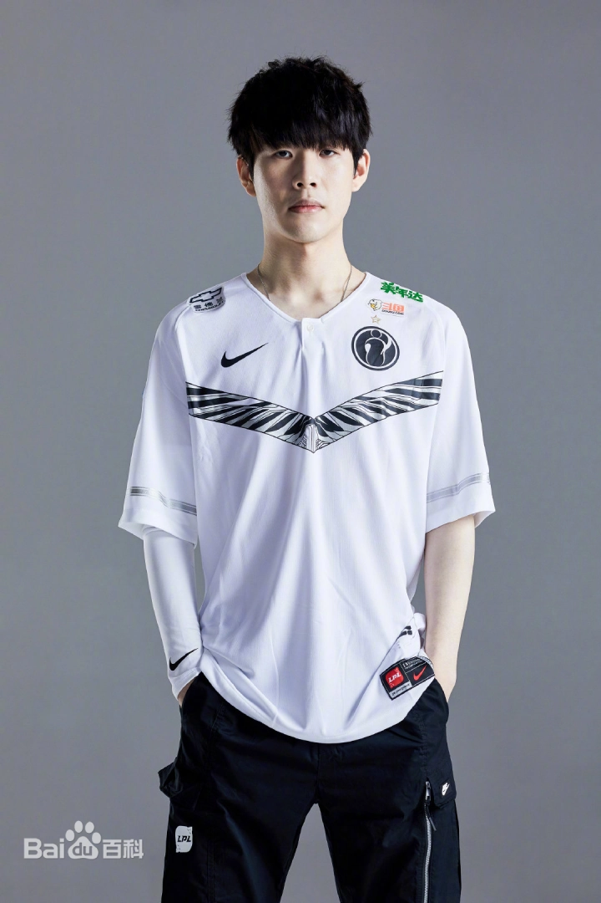

<!DOCTYPE html>
<html lang="zh"></html>
<head>
    <meta charset="UTF-8">
    <meta name="viewport" content="width=device-width, initial-scale=1.0">
    <title>TheShy - 英雄联盟选手</title>
    <link rel="stylesheet" href="styles.css">
</head>
<body>
    <header>
        <h1>欢迎来到 TheShy 的网站 -- 粉丝向</h1>
        <nav>
            <ul>
                <li><a href="index.html">主页</a></li>
                <li><a href="career.html">选手经历</a></li>
                <li><a href="honors.html">荣誉与成就</a></li>
                <li><a href="photos.html">来点帅照</a></li>
            </ul>
        </nav>
    </header>

    <section class="intro">
        <div class="intro-content">
            <div class="intro-text">
                <h2>关于 TheShy</h2>
                <p>
                    TheShy（原名：姜承録，英文名：Kang "TheShy" Seung-lok）是一名来自韩国的职业《英雄联盟》选手，以其在 上单位置 的卓越表现而闻名。<br>
                    他是 IG（Invictus Gaming） 战队的成员之一，曾在 2018 年随队赢得了《英雄联盟》全球总决赛（S8）的冠军，是中国赛区历史上第一位获得世界冠军的队伍成员。
                </p>
                <h2>个人背景</h2>
                <p><span class="highlight">TheShy</span>（本名：姜承録，英文名：Kang Seung-lok）是来自韩国的《英雄联盟》职业选手，主要担任上单（Top Lane）位置。他以精准的操作和深厚的英雄池在全球范围内赢得了众多粉丝。</p>
                <ul>
                    <li>出生日期：1999年10月20日</li>
                    <li>游戏ID：TheShy</li>
                    <li>位置：上单（Top Lane）</li>
                    <li>队伍：Invictus Gaming（IG）</li>
                </ul>
                <h2>个人风格与特点</h2>
                <p>TheShy 是一位操作极其精湛的上单选手，以广泛的英雄池、精准的操作和出色的游戏意识闻名。他的个人风格有以下特点：</p>
                <ul>
                    <li><span class="highlight">英雄池广泛</span>：TheShy 擅长各种类型的上单英雄，特别是高操作要求的英雄，如剑姬（Fiora）、瑞兹（Ryze）、凯南（Kennen）、吸血鬼（Vladimir）等。</li>
                    <li><span class="highlight">精准操作</span>：无论是补刀、对线还是团战操作，TheShy 都能展示出极高的个人技巧。</li>
                    <li><span class="highlight">战术意识</span>：他在团战中的站位和决策非常关键，能够帮助队伍赢得比赛。</li>
                    <li><span class="highlight">才艺方面</span>：会弹钢琴哦。</li>
                </ul>
            </div>
            <div class="intro-image">
                
            </div>
        </div>
    </section>

    <footer>
        <p>© 2024 TheShy Official</p>
    </footer>
</body>
</html>
